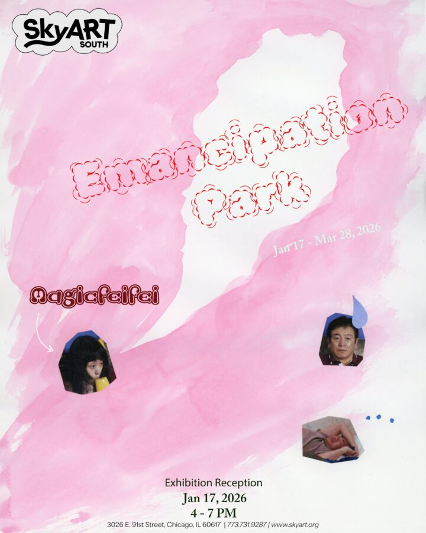

Magicfeifei: Emancipation Park
Emancipation Park, a space with a deceptively monumental name in Wuhan, China, is a simple public space where elders gather to dance after dinner, where daily life quietly unfolds.
Adopted from the deceptive title of the actual park, around where the artist grew up, this exhibition creates a Disneyland for the world of businessmen, a park where business men are animated and lured into a soft, cute, and willing trap. The danger is disguised, the surfaces are gentle. Unless you desire to reveal the wound, it is harmless.
Subverting her childhood memories, Magicfeifei turns the child’s kick beneath a business dinner table, the girl’s discomfort of sitting among “powerful” men, and the artist’s situation of being doubted if she is capable of creating art into a space of her irony, entertainment, and eventually emancipation. These moments of past and present, of memories and the everyday are what compose this archive of the personal and the cultural.
What the artist works to point out is this: it is just a park; you are allowed to enter; you are allowed to stay; you may even want to join the dance.